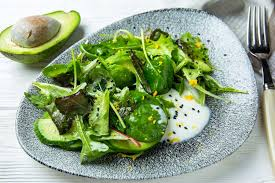

| Понеділок | Вівторок | Середа | Четвер | Пятниця | |
|---|---|---|---|---|---|
| Сніданок | Вівсянка
з фруктами і горіхами
|
Сирники зі сметаною
|
Омлет з томатами та шпинатом
|
Йогурт з медом і горіхами
|
Гречаники зі сметаною
|
| Обід | Суп із сочевиці
|
Борщ з Буряком | Овочевий Рагу | Курячий Салат з Авокадо  |
Солянка |
| Вечеря | Філе з овочами в духовці
|
Гречка з грибами
|
Риба на пару з броколі
|
Рататуй
|
Паста карбонара
|